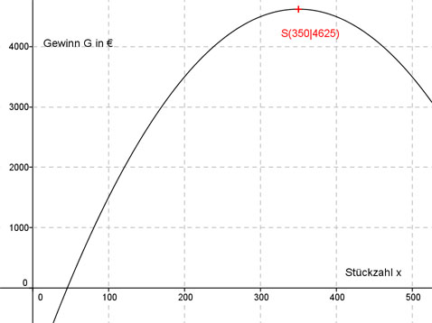

Aufgabe 125 Eine Firma stellt ein Gerät her, das sie für 35 € pro Stück verkauft. Bei der Herstellung entstehen jeden Tag feste Kosten in Höhe von 1 500 €. Werden am Tag x Stück produziert, hat sie weitere Kosten in Höhe von 0,05 x2. Bei welcher Tagesproduktion entsteht der höchste Gewinn? Gewinn G = Erlös E - Kosten K Stückzahl sei x E(x) = Verkaufspreis * Stückzahl = 35 * x K = variable Kosten + feste Kosten Variable Kosten = 0,05 x2 (abhängig von der Stückzahl) Feste Kosten = 1 500 € K(x) = 0,05 x2 + 1 500 G(x) = 35 * x - (0,05x2 + 1 500) G(x) = 35 * x - 0,05x2 - 1 500 G(x) = - 0,05x2 + 35 * x - 1 500 Dies ist die Funktionsgleichung einer nach unten geöffneten, gestauchten Parabel, deren höchster Punkt der Scheitelpunkt ist. G(x) = - 0,05x2 + 35 * x - 1 500 | :(-0,05) G(x) - ------ = x2 - 700x + 30 000 0,05 Quadratische Ergänzung: G(x) - ------ = x2 - 700x + 122 500 - 122 500 + 30 000 0,05 mit x2 - 700x + 122 500 = (x - 350)2 G(x) - ------ = (x2 - 350)2 - 92 500 |*(-0,05) 0,05 G(x) = -0,05(x - 350)2 + 4 625 Scheitelpunkt abgelesen: S(350|4 625) Die Scheitelpunktkoordinaten bedeuten: Bei einer Tagesproduktion von x = 350 entsteht der höchste Gewinn G und beträgt 4 625 €. 